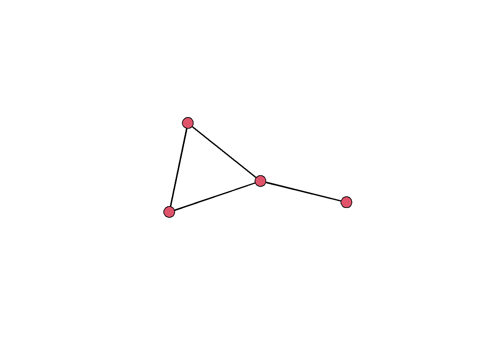

library(statnet)Working with node attributes
Working with measures derived from networks, such as node-level centrality scores, becomes especially interesting when you combine them with exogeneous node attributes, such as an actor’s opinions, sociodemographic characteristics, or innovative output.
There are two basic options to combine a network and node attributes: (1) add the node attributes to the network, and (b) add a node-level score computed from the network to the attribute dataset.
Before we get going, we first need to load statnet again:
Adding attributes to a network
Let’s say we have a small network describing friendships among four students:
edgelist <- data.frame(
sender = c(1,2,3,3),
receiver = c(2,3,1,4)
)
net <- network(edgelist, directed=FALSE)
gplot(net, gmode="graph")
In addition to the network, we have a data frame with attributes for the four students:
attributes <- data.frame(
subject = c("geography", "geography", "economics", "physics"),
grade = c(1.3, 1.7, 2.3, 2.7),
name = c("Tim", "Tina", "Tom", "Tiphany")
)
attributes subject grade name
1 geography 1.3 Tim
2 geography 1.7 Tina
3 economics 2.3 Tom
4 physics 2.7 TiphanyWe can now add the attributes to the network object using the vertex pipe operator %v%:
net %v% "subject" <- attributes$subject
net %v% "grade" <- attributes$grade
net %v% "name" <- attributes$nameIf we do this, we need to make sure that the order of actors in the network is the same as in the data frame (i.e., that node one corresponds to Tim, node 2 corresponds to Tina, etc.).
inspecting the network object, we can see that it now contains our actor information as vertex attributes:
net Network attributes:
vertices = 4
directed = FALSE
hyper = FALSE
loops = FALSE
multiple = FALSE
bipartite = FALSE
total edges= 4
missing edges= 0
non-missing edges= 4
Vertex attribute names:
grade name subject vertex.names
No edge attributesAdding node-level measures to the attribute table
Let’s say we have computed degree centrality scores for our four students:
deg <- degree(net)
deg[1] 4 4 6 2To make these more easily comparable with our actor attributes, we can add them to the attributes data frame. Here, we again need to make sure that the order of nodes in the network is the same as in the data frame:
attributes$degree <- degWe can now continue working with this data frame in the usual way (see session 3 on data handling for some examples). Because most standard statistics procedures are more convenient to use with data frames, computing network measures and adding them to an attribute data frame is often more sensible than adding attributes to the network object.
There are however some exceptions and caveats: If you modify the network, e.g., by removing isolates or only keeping the main component, you also need to update the attribute data frame. Also, some network analysis packages make use of attributes contained in the network (e.g., the ergm package).
Assignment
Load the Load the Lazega advice network into and the associated attribute dataset (lazega_attrib.csv) into your session. These attribute table contains additional information on the lawyers in the network (e.g., age, gender, office, …). Read the description of the data provided in the Lazega_lawyers.html file, which you can open in a standard internet browser.
Loading attributes
attributes <- read.csv2("data/lazega_attrib.csv")
attributesLoading network
adjmat <- read.table("data/lazega_advice.csv",
sep =";",
header = TRUE,
row.names = 1,
check.names = FALSE)
adjmat <- symmetrize(as.matrix(adjmat))
net_advice <- network(adjmat, directed=FALSE)
net_adviceProblem 1
a) Visualize the network using information on the office affiliation and the status of the members.
Solution
palette(c("grey10", "orange", "cornflowerblue"))
gplot(net_advice,
vertex.col=attributes$office,
vertex.cex=1.5,
vertex.sides=ifelse(attributes$status == 1, 50, 4),
edge.col="grey70")b) Compare the centrality scores according to a measure of your choosing across the three offices (office), the two status groups (status) and gender. What differences do you find and what could be possible explanations?
Solution
# add betweenness scores to attribute df
attributes$betweenness <- betweenness(net_advice, gmode="graph", rescale=TRUE)
# manually
mean(attributes$betweenness[attributes$status == 1])
mean(attributes$betweenness[attributes$status == 2])
# using package
library(dplyr)
attributes |>
group_by(status) |>
summarize( n = n(), bet = mean(betweenness))
attributes |>
group_by(office) |>
summarize( n = n(), bet = mean(betweenness))b) Compare the lawyer with the highest centrality to the lawyer with the lowest centrality in terms of their attributes and summarize your findings.
Solution
attributes[which.max(attributes$betweenness),]
attributes[which.min(attributes$betweenness),]Problem 2
a) Compute the effective size, efficiency, and constraint for all lawyers in the network.
Structural hole measures
egonet_effsize <- function(egonet) {
n <- network.size(egonet) - 1
t <- network.edgecount(egonet) - n
return(n - 2 * t / n)
}
egonet_efficiency <- function(egonet){
size <- network.size(egonet) - 1
effsize <- egonet_effsize(egonet)
return(effsize/size)
}
dyadic_constraint <- function(egonet, alter) {
pij <- egonet[1, alter] / sum(egonet[1,])
pqj <- egonet[alter,-1] / sum(egonet[alter,])
pqj[is.nan(pqj)] <- 0
return((pij + sum(pij * pqj))^2)
}
egonet_constraint <- function(egonet) {
alteri <- 2:network.size(egonet)
dc <- sapply(alteri, function(a) dyadic_constraint(egonet, a))
return(sum(dc))
}
apply_egonet <- function(net, FUN) {
if (is.directed(net)) stop("Not implemented for directed graphs.")
egonets <- lapply(ego.extract(net), FUN = network, directed = FALSE)
return(sapply(egonets, FUN))
}Solution
attributes$effsize <- apply_egonet(net_advice, egonet_effsize)
attributes$efficiency <- apply_egonet(net_advice, egonet_efficiency)
attributes$constraint <- apply_egonet(net_advice, egonet_constraint)b) According to Burt’s structural hole theory, what would you expect regarding the relation between an actors’s scores on Burt’s measures of brokerage and their status?
Solution
# Because structural holes are theorized to provide brokerage advantages, we expect that more succesful lawyers (those with higher status) have more efficient ego networks.c) Test you expectations with appropriate methods (descriptive statistics, visualization, or statistical modeling) and discuss your findings as well as potential problems with the approach.
Solution
library(ggplot2)
attributes$status <- factor(attributes$status,
levels=c(1,2),
labels=c("partner", "associate"))
ggplot(attributes, aes(factor(status), effsize)) + geom_boxplot()
ggplot(attributes, aes(factor(status), constraint)) + geom_boxplot()
ggplot(attributes, aes(log(constraint), seniority)) + geom_point() + geom_smooth(method="lm")
# linear regression on seniority (lower is higher)
fit1 <- lm(seniority ~ scale(constraint) + scale(age), data=attributes)
summary(fit1)
# logistic regression on status (probability of being an associate)
fit2 <- glm(status ~ scale(constraint) + scale(age), data=attributes, family="binomial")
summary(fit2)
plogis(2.22)
plogis(-2.36)